import numpy as np
from zermeloDF import ZermeloDFConfig, ZermeloDF
from zermeloNumericalTest import ZermeloNumericalTestConfig, ZermeloNumericalTest, ZermeloPinnsTest
from zermeloPinns import ZermeloPinnsConfig, ZermeloPinns
# Parameters
r = 0.5
R = np.sqrt(2)
kappa = 0.1
vs = 0.5
a = 0.2
sigma_x = 0.5
sigma_y = 0.2
M = 80 # Grid size
X_min, X_max = -2.0, 2.0
Y_min, Y_max = -2.0, 2.01. Présentation du problème
Le modèle est l’EDP HJBI sur un anneau : Anneau : \[ \Omega=\{(x,y)\in\mathbb{R}^2:\ r^2<x^2+y^2<R^2\}, \]
EDP : \[ -\tfrac12(\sigma_x^2 u_{xx}+\sigma_y^2 u_{yy})\;-\;v_c(x,y)\,u_x\;+\;v_s\|\nabla u\|_2\;-\;\kappa\|\nabla u\|_1\;-\;f(x,y)=0,\quad x\in\Omega. \] Les conditions au bord sont : \[ \quad u=0\ \text{sur}\ \partial B_r,\quad u=1\ \text{sur}\ \partial B_R. \]
Vent : \[ v_c(x,y)=1-a\sin\Big(\pi\frac{x^2+y^2-r^2}{R^2-r^2}\Big). \]
Paramètres numériques :
\[
r=0.5,\quad R=\sqrt{2},\quad \kappa=0.1,\quad v_s=0.5,\quad a=0.2,\quad \sigma_x=0.5,\quad \sigma_y=0.2.
\]
2. Objectifs
3.1. Approche par différences finies
3.1.1 f correspondant à une solution explicite
d:\deb\MyWebSite\franckdeba-ws\TP EDP\zermeloDF.py:102: RuntimeWarning: invalid value encountered in divide
alpha_x = np.where(grad_norm > eps, Ux / grad_norm, 0.0)
d:\deb\MyWebSite\franckdeba-ws\TP EDP\zermeloDF.py:103: RuntimeWarning: invalid value encountered in divide
alpha_y = np.where(grad_norm > eps, Uy / grad_norm, 0.0)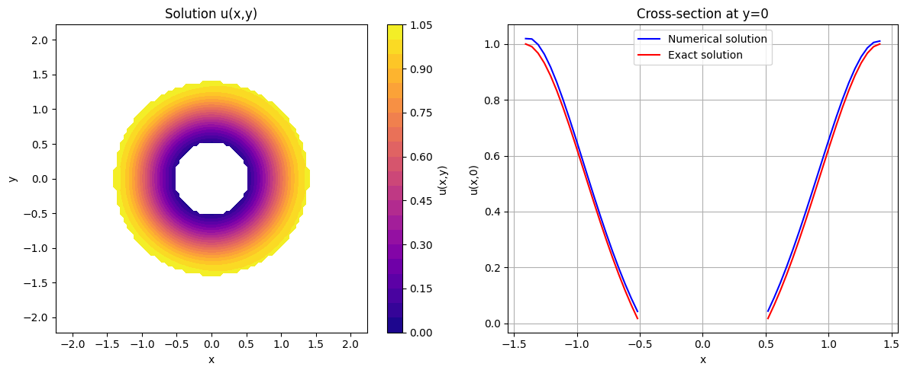
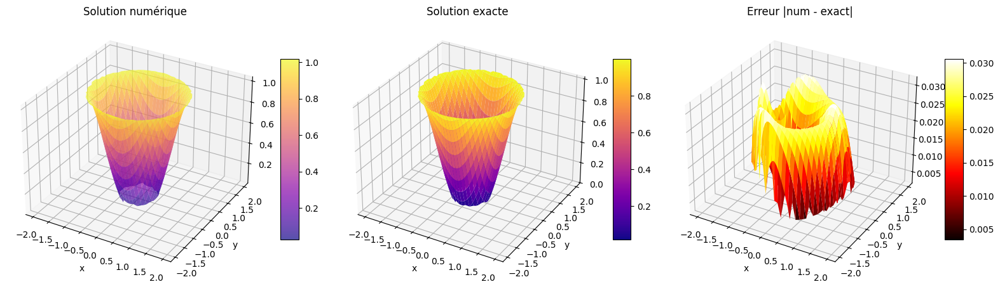
Ordre numérique de convergence
=======================================================
TEST DE CONVERGENCE (Cas A : solution exacte connue)
=======================================================
M error order_alpha tcpu
0 10 0.424347 0.000000 0.024006
1 20 0.106676 2.135322 0.055781
2 40 0.060535 0.846822 0.157370
3 80 0.031743 0.948138 0.789532
4 160 0.027692 0.198708 4.069982
5 320 0.026303 0.074620 18.5555853.1.2. f = 1, solution exacte u inconnue
d:\deb\MyWebSite\franckdeba-ws\TP EDP\zermeloDF.py:102: RuntimeWarning: invalid value encountered in divide
alpha_x = np.where(grad_norm > eps, Ux / grad_norm, 0.0)
d:\deb\MyWebSite\franckdeba-ws\TP EDP\zermeloDF.py:103: RuntimeWarning: invalid value encountered in divide
alpha_y = np.where(grad_norm > eps, Uy / grad_norm, 0.0)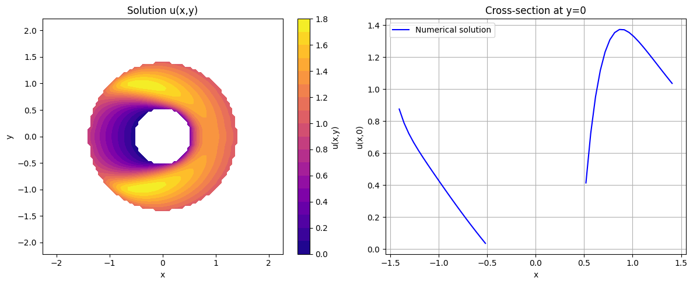
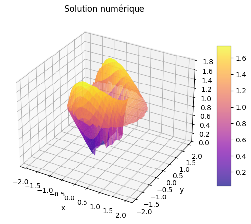
Ordre numérique de convergence
=======================================================
TEST DE CONVERGENCE (Cas B : f = 1 et solution exacte inconnue)
=======================================================
M error order_alpha tcpu
0 10 100.000000 0.000000 0.021660
1 20 4.487353 4.800150 0.046992
2 40 2.456894 0.900329 0.189255
3 80 1.260411 0.980294 0.767835
4 160 0.996527 0.341969 5.784756
5 320 0.549916 0.861564 13.9007433.2. Approche par réseau de neuronne
3.2.1. f correpondant à une solution explicite
Epoch 0: loss = 1.5741e+00 (pde=6.90e-01, bc=8.84e-01)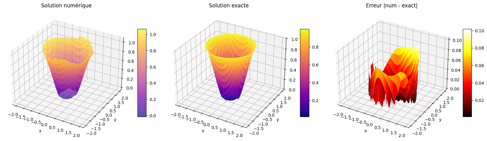
Epoch 0: loss = 1.7516e+00 (pde=6.65e-01, bc=1.09e+00)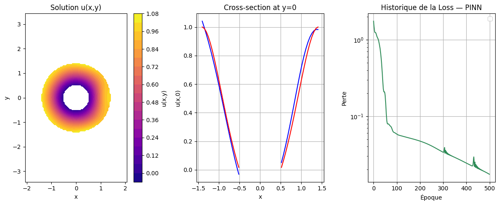
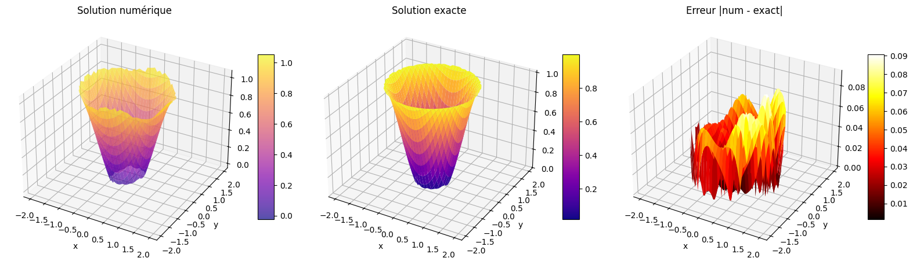
Test de convergence
3.2.2. f = 1, solution exacte inconnue
Epoch 0: loss = 1.9652e+00 (pde=1.01e+00, bc=9.54e-01)
Epoch 500: loss = 4.2514e-01 (pde=1.76e-01, bc=2.49e-01)
Epoch 1000: loss = 4.0594e-01 (pde=1.79e-01, bc=2.27e-01)
Epoch 1500: loss = 3.9472e-01 (pde=1.70e-01, bc=2.25e-01)
Epoch 2000: loss = 3.6672e-01 (pde=1.53e-01, bc=2.13e-01)
Epoch 2500: loss = 3.5560e-01 (pde=1.46e-01, bc=2.09e-01)
Epoch 3000: loss = 3.5168e-01 (pde=1.56e-01, bc=1.96e-01)
Epoch 3500: loss = 3.3388e-01 (pde=1.47e-01, bc=1.87e-01)
Epoch 4000: loss = 3.0903e-01 (pde=1.39e-01, bc=1.70e-01)
Epoch 4500: loss = 2.7738e-01 (pde=1.12e-01, bc=1.66e-01)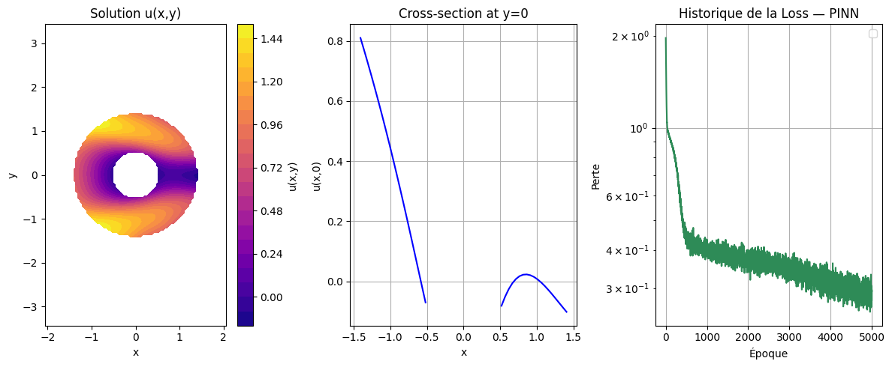
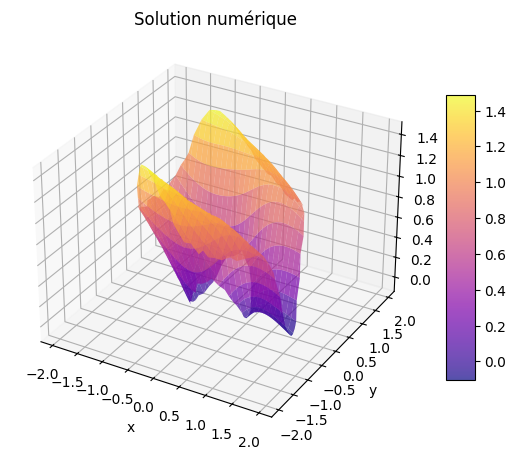
Epoch 0: loss = 1.6181e+00 (pde=9.07e-01, bc=7.11e-01)
Epoch 500: loss = 1.7584e-01 (pde=8.99e-02, bc=8.59e-02)
Epoch 1000: loss = 7.3045e-02 (pde=4.11e-02, bc=3.19e-02)
Epoch 1500: loss = 4.6404e-02 (pde=2.43e-02, bc=2.21e-02)
Epoch 2000: loss = 1.9534e-02 (pde=1.20e-02, bc=7.53e-03)
Epoch 2500: loss = 1.5129e-02 (pde=9.65e-03, bc=5.48e-03)
Epoch 3000: loss = 1.1718e-02 (pde=7.78e-03, bc=3.93e-03)
Epoch 3500: loss = 1.6733e-02 (pde=1.38e-02, bc=2.97e-03)
Epoch 4000: loss = 9.1469e-03 (pde=6.26e-03, bc=2.89e-03)
Epoch 4500: loss = 1.0102e-02 (pde=8.89e-03, bc=1.21e-03)d:\deb\MyWebSite\franckdeba-ws\TP EDP\zermeloPinns.py:286: UserWarning: No artists with labels found to put in legend. Note that artists whose label start with an underscore are ignored when legend() is called with no argument.
plt.legend()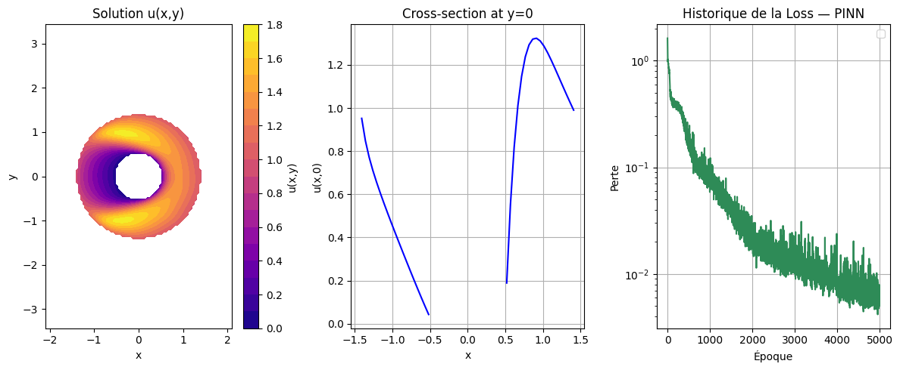
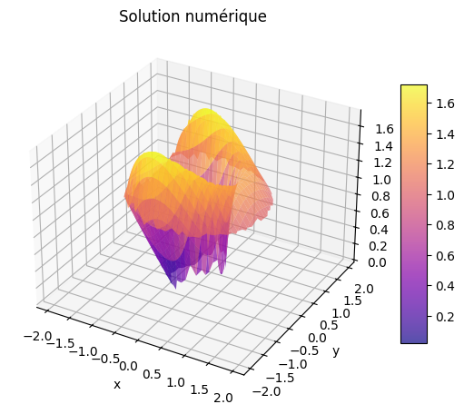
Test de convergence
pinnsTest = ZermeloPinnsTest(
r=0.5, R=np.sqrt(2), kappa=0.1,
vs=0.5, a=0.2, sigma_x=0.5, sigma_y=0.2
)
results = pinnsTest.run(
hidden_list = [20, 20, 20, 20],
layers_list = [1, 1, 1, 1],
delta_list = [0.5, 0.3, 0.2, 0.1 ], # delta décroissant
n_pde_bc_list = [(40, 40), (80,40), (120,40), (200,40) ],
num_iter_list = [5000, 5000, 5000, 8000] # SGD iter
)MSE=1.9626e-03 error=1.3399e-01 (43.7s)
MSE=1.8375e-03 error=1.0986e-01 (61.7s)
MSE=1.8077e-03 error=1.1731e-01 (98.7s)
MSE=1.9173e-03 error=1.0445e-01 (268.9s)
hidden layers delta n_pde n_bc SGD iter MSE error tpcu
0 20 1 0.5 40 40 5000 0.001963 0.133991 43.7
1 20 1 0.3 80 40 5000 0.001838 0.109857 61.7
2 20 1 0.2 120 40 5000 0.001808 0.117315 98.7
3 20 1 0.1 200 40 8000 0.001917 0.104451 268.9
pinnsTest = ZermeloPinnsTest(
r=0.5, R=np.sqrt(2), kappa=0.1,
vs=0.5, a=0.2, sigma_x=0.5, sigma_y=0.2
)
results = pinnsTest.run(
hidden_list = [50, 50, 50, 50],
layers_list = [3, 3, 3, 3],
delta_list = [0.5, 0.3, 0.2, 0.1 ], # δ décroissant
n_pde_bc_list = [(40, 40), (80,40), (120,40), (200,40) ],
num_iter_list = [5000, 5000, 5000, 8000] # SGD iter
)3 hidden * 3 layers = 9 combinaisons
=======================================================
[ 1/9] hidden=32, layers=2 -> MSE=1.7237e-03 error=1.2495e-01 (22.2s)
[ 2/9] hidden=32, layers=3 -> MSE=1.6001e-03 error=1.2311e-01 (32.5s)
[ 3/9] hidden=32, layers=4 -> MSE=1.6017e-03 error=1.0322e-01 (55.1s)
[ 4/9] hidden=64, layers=2 -> MSE=1.9479e-03 error=9.7815e-02 (51.3s)
[ 5/9] hidden=64, layers=3 -> MSE=1.4912e-03 error=8.4426e-02 (84.7s)
[ 6/9] hidden=64, layers=4 -> MSE=1.1848e-03 error=7.3802e-02 (95.2s)
[ 7/9] hidden=128, layers=2 ->